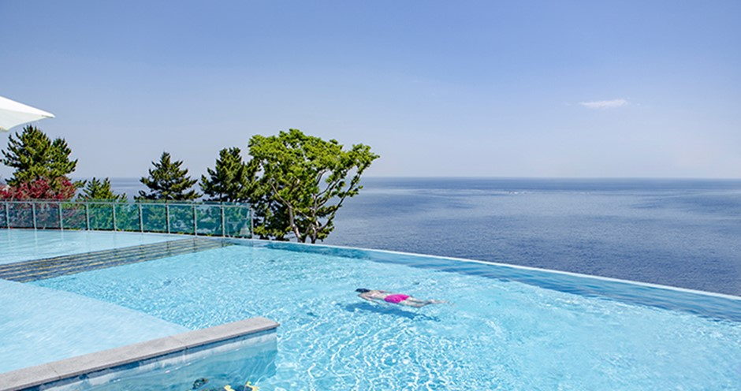
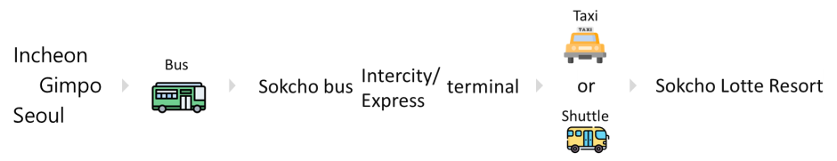
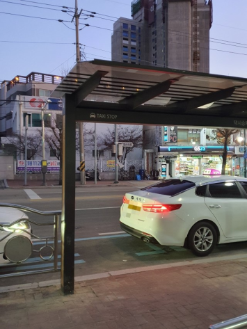
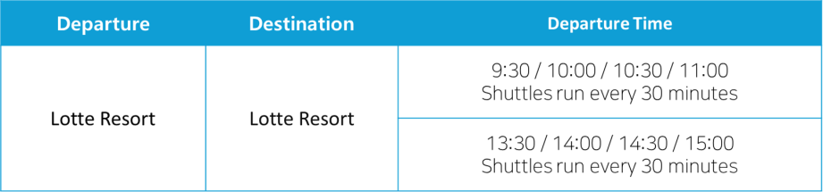
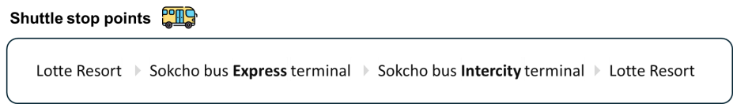
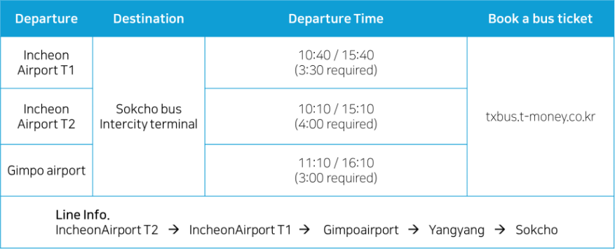
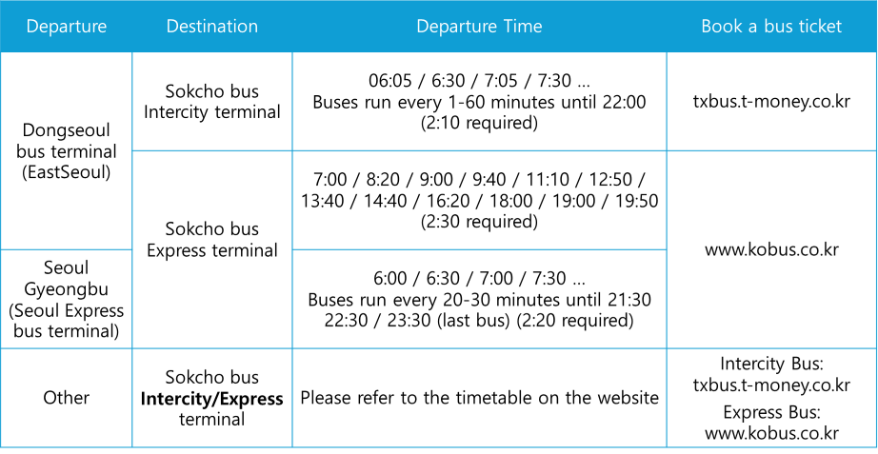
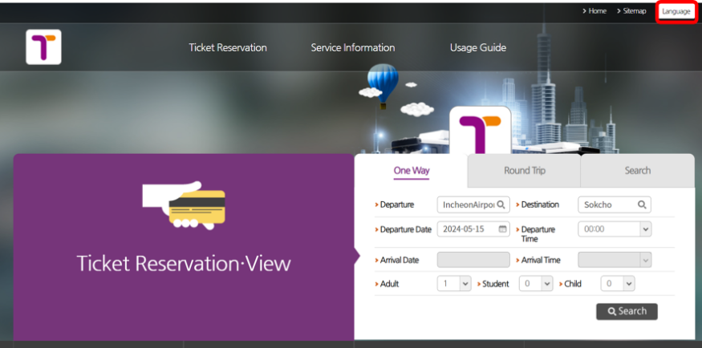
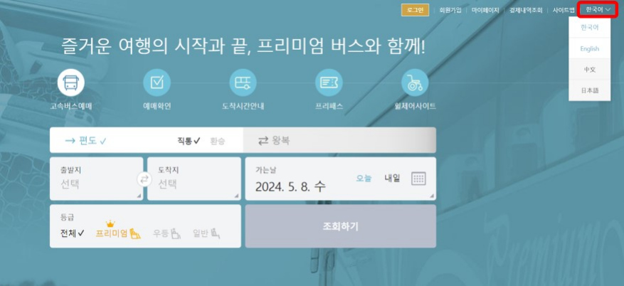

    <div class="header-container" style="display: flex; align-items: center; justify-content: space-between;">
        <div class="col-lg-12">
            <h2>Venue</h2>
            <p>RTCSA 2024 will be co-located with NVMSA 2024 at the <a href="https://www.lotteresort.com/sokcho/en/about">Lotte Resort Sokcho</a>, located near the beautiful Seoraksan Mountain on the East Sea coast of Korea. Sokcho is one of the largest cities in Korea, known for its natural scenery, including beaches and mountains.</p>
            <p>Sokcho offers various attractions for visitors. Seoraksan National Park provides outdoor activities like hiking with scenic views. The city’s beaches offer relaxation and water sports opportunities. The Sokcho Market is a place to experience local food and shop for traditional Korean items. Cultural and historical experiences can be found at the Sokcho City Museum and nearby historical sites.</p>
            <p>The Sokcho Lotte Resort is renowned for its exceptional facilities and services. Our conference will be hosted in state-of-the-art meeting spaces equipped with the latest audiovisual technology, ensuring a productive and engaging environment for every session. The resort's spacious conference rooms and elegant banquet halls provide flexible options to accommodate both large plenary sessions and smaller, more intimate discussions.</p>
            <p>Aside from the superb conference facilities, the resort offers a variety of amenities to enhance your stay. Guests can enjoy luxurious accommodations with stunning views, dine at gourmet restaurants serving both local and international cuisine, and unwind with leisure activities such as golf, spa treatments, and indoor and outdoor swimming pools.</p>
            <p>Moreover, the location of Sokcho Lotte Resort allows easy access to Seoraksan National Park, providing a perfect opportunity for attendees to explore South Korea's natural landscapes and cultural heritage during their stay.</p>
            <p>As we gather to share knowledge and foster collaborations, Sokcho Lotte Resort stands ready to ensure a comfortable, productive, and memorable experience for all participants. We look forward to welcoming you to this exquisite venue where professional enrichment and natural beauty reside in harmony.</p>
            <div style="display: flex;">
                
                
            </div>
            <hr>
            <h2>Transportation</h2>
            

            <h3> ■ Incheon Airport → Lotte Resort SOKCHO</h3>
            <ul>
                <li>Incheon Airport T1 (Bus) → Sokcho bus Intercity terminal (Taxi) → Lotte Resort SOKCHO</li>
                <li>Incheon Airport T2 (Bus) → Sokcho bus Intercity terminal (Taxi) → Lotte Resort SOKCHO</li>
            </ul>
        
            <h3> ■ Gimpo Airport → Lotte Resort SOKCHO</h3>
            <ul>
                <li>Gimpo Airport (Bus) → Sokcho bus Intercity terminal (Taxi) → Lotte Resort SOKCHO</li>
            </ul>
        
            <h3> ■ Seoul → Lotte Resort SOKCHO</h3>
            <ul>
                <li>Seoul Gyeoungbu Express bus terminal (Bus) → Sokcho bus Express terminal (Taxi) → Lotte Resort SOKCHO</li>
                <li>Dongseoul bus terminal (Bus) → Sokcho bus Intercity terminal (Taxi) → Lotte Resort SOKCHO</li>
            </ul>
        
            <!-- <h4>Note:</h4> -->
            <p><b>※ You will need to take a taxi or shuttle from Sokcho Terminal to the resort.</b> <br> <b>※ </b>Taxis are available from the Sokcho terminal to the resort. There is a taxi stand (Taxi Stop) when you leave the terminal. &nbsp;&nbsp;&nbsp;▼</p>


            
            <br>
            <br>
            <br>

            <h4><b>※ </b>Shuttle timetable & stop points &nbsp;&nbsp;&nbsp;▼</h4>
            <p>&nbsp;&nbsp;&nbsp;Shuttle buses will operate for 2 days from August 21, 2024 (Wed) to August 22, 2024 (Thu).</p>
            
            <br>
            
            <ul>
                <li>The schedule may change depending on the shuttle operation time.</li>
                <li><b>We will announce the details of the boarding place (including photos) and the detailed time of each boarding place later.</b></li>
            </ul>
            <br>
            <br>
            <br>
            <h4><b>※ </b>Resort Information:</h4>
            <p><a href="https://www.lotteresort.com/sokcho/en/about">https://www.lotteresort.com/sokcho/en/about</a> (+82 1588-4355)</p>
            <br>
            <br>
            <br>
            <h4><b>※ </b>Bus timetable</h4>
            <h5>From Airport ▼</h5>
            
        
            <h5>From Seoul (Others) ▼</h5>
            
            <br>
            <br>
            <br>
            <h4><b>※ </b>Book a bus ticket:</h4>
            <ol>
                <li>
                    Intercity Bus: <a href="https://txbus.t-money.co.kr/main.do">https://txbus.t-money.co.kr/main.do</a> (+82 1644-3070) ▼
                    <ol type="a">
                        <li>Once you are on the site, you can select your language by pressing the 'Language' button in the top right corner.</li>
                        <li>Select your departure (Incheon Airport T1,T2, Gimpo Airport, Eastseoul, etc.).</li>
                        <li>Select a destination as 'Sokcho Intercity Bus Terminal'.</li>
                        
                    </ol>
                    
                </li>
                <li>
                    Express Bus: <a href="https://www.kobus.co.kr/main.do">https://www.kobus.co.kr/main.do</a> ▼
                    <ol type="a">
                        <li>Once you are on the site, you can select your language by pressing the 'Language' button in the top right corner.</li>
                        <li>Select your departure (Seoul Gyeoungbu, Dongseoul, etc.).</li>
                        <li>Select a destination as 'Sokcho Express Bus Terminal'.</li>
                        
                    </ol>
                    
                </li>
            </ol>
            <br>
            <br>
            <br>
            <h4><b>※ </b>Contact: Esther</h4>
            <p>(Scan or upload this QR code using the WhatsApp camera to add me on WhatsApp)</p>
            <center>
                
            </center>
        
            <br>
            <br>
            <br>
            <br>
            <br>
            <br>
            <p>Resource: Taxi stop image - <a href="www.welfarehello.com/hometown-news/2bce168e-0bb3-47ec-ba74-2a450b7a681e">www.welfarehello.com/hometown-news/2bce168e-0bb3-47ec-ba74-2a450b7a681e</a></p>
        </div>

        


    </div>
